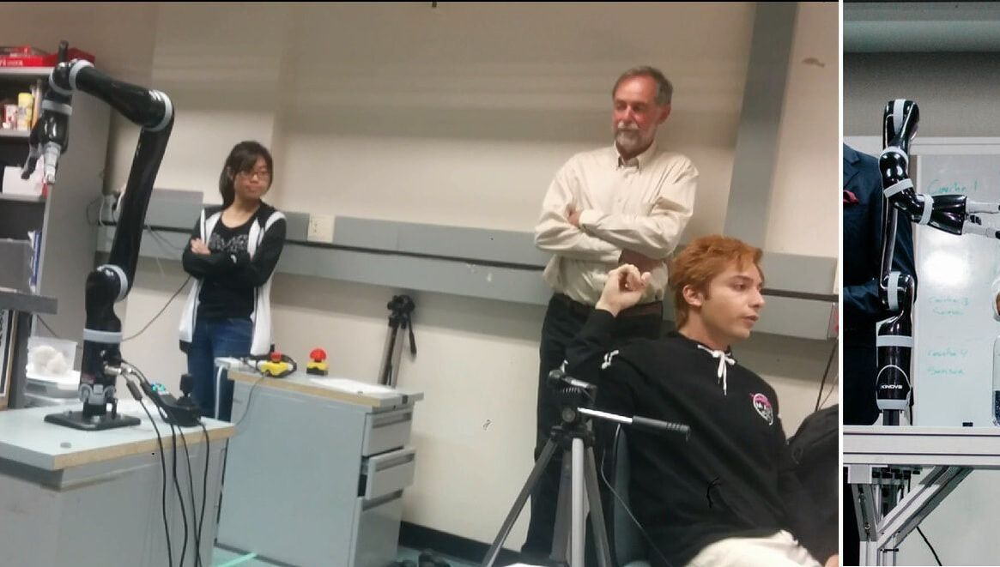
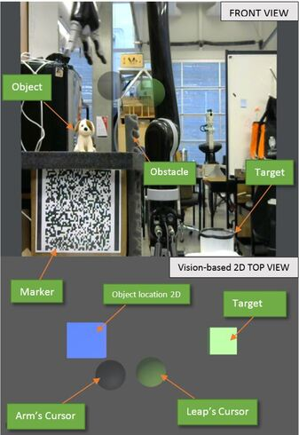
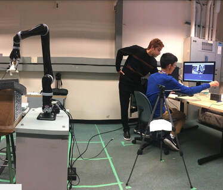

02 / ACADEMIC PROJECT
Orthographic
Teleoperation.
A Unity-based interface combining motion capture and computer vision to support Cartesian teleoperation of a six-degree-of-freedom robot arm.
View the research publication ↗
THE CHALLENGE
Make spatial tasks
easier to interpret.
Remote object placement requires an operator to understand the relationship between the robot, the object, and the target. This project explores a simple, cost-effective interface that pairs motion tracking with two-dimensional views of a three-dimensional workspace.
I developed the teleoperation system around IR camera-based motion capture and marker-based computer vision, using a single inexpensive webcam to support object placement.
INTERFACE & APPROACH
A shared view of
hand, arm, and target.
- Track the operator
Use IR camera-based motion capture as an input for robot-arm teleoperation.
- Observe the workspace
Use a webcam and visual markers to relate objects to the workspace.
- Present spatial cues
Combine the camera view with a two-dimensional top view in Unity, showing the object, target, and cursors.

RESEARCH
From interface
to comparative study.
The project is documented in Orthographic Vision-based Interface with Motion-tracking System for Robot Arm Teleoperation: A Comparative Study.
Read the publication ↗